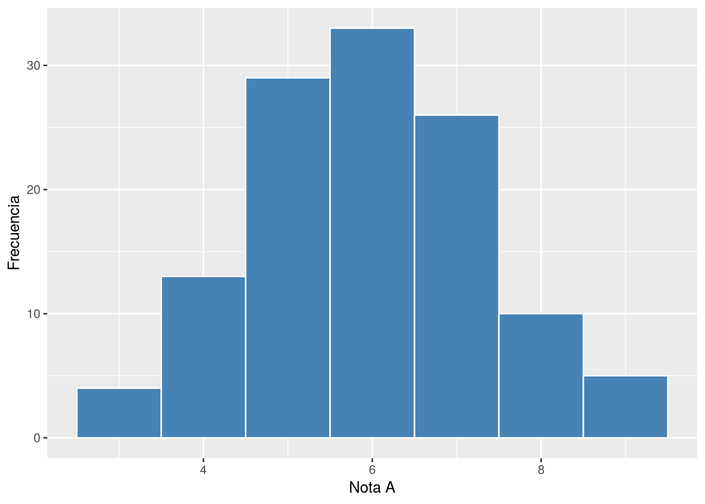
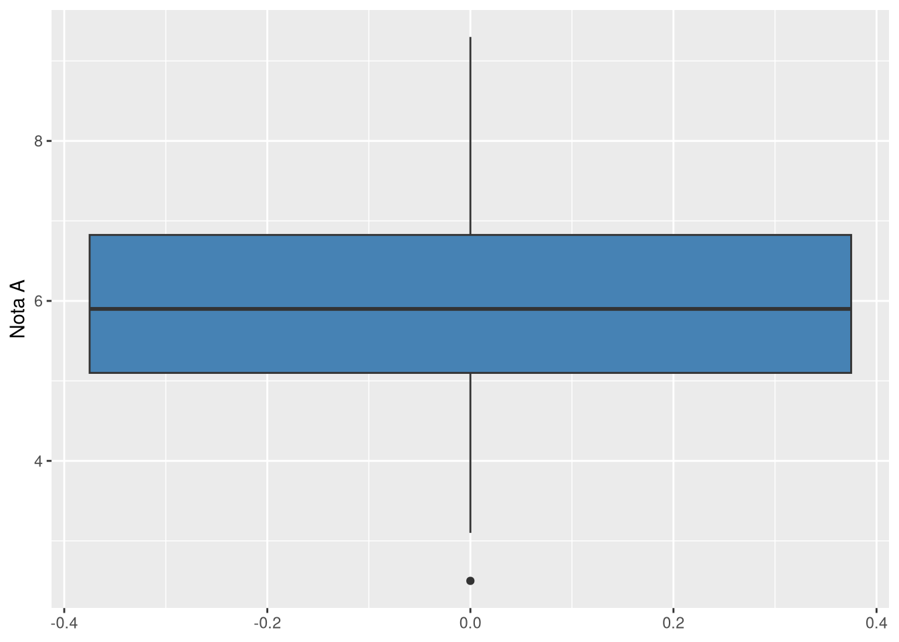
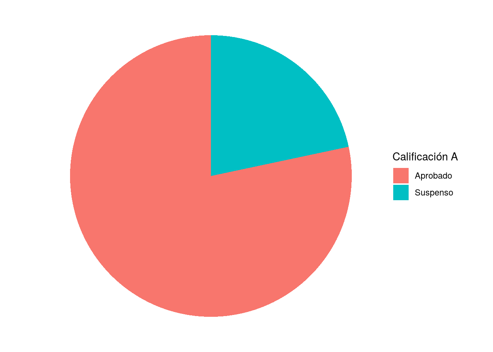
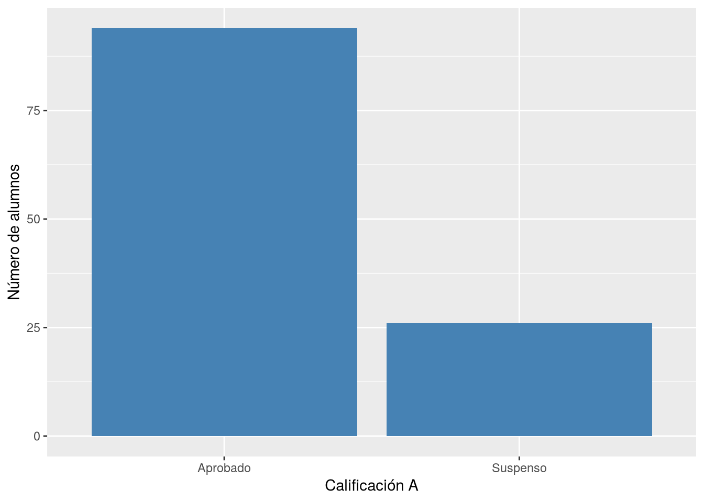

Código
nrow(df)[1] 120Código
mean(df$notaA)[1] 6.028333Código
sd(df$notaA)[1] 1.340524Código
min(df$notaA)[1] 2.5Código
max(df$notaA)[1] 9.3Código
quantile(df$notaA) 0% 25% 50% 75% 100%
2.500 5.100 5.900 6.825 9.300 Este primer capítulo de la segunda parte del libro corresponde a la fila más sencilla de la tabla de decisión: no hay ninguna variable independiente, y el objetivo es describir o contrastar una única variable de una única población, sin compararla con ninguna otra. Según el tipo de esa variable, cuantitativa o cualitativa, los estadísticos descriptivos, los gráficos y los contrastes de hipótesis apropiados son distintos, por lo que el capítulo se organiza en dos grandes secciones. Todos los ejemplos utilizan el conjunto de datos datos-curso.csv presentado en el capítulo anterior.
Antes de aplicar cualquier contraste conviene describir la variable con sus estadísticos habituales de posición, dispersión y forma. Para la variable notaA se obtienen así:
nrow(df)[1] 120mean(df$notaA)[1] 6.028333sd(df$notaA)[1] 1.340524min(df$notaA)[1] 2.5max(df$notaA)[1] 9.3quantile(df$notaA) 0% 25% 50% 75% 100%
2.500 5.100 5.900 6.825 9.300 library(moments)
skewness(df$notaA)[1] 0.1373915kurtosis(df$notaA) - 3[1] -0.102287La muestra está formada por los \(n=120\) alumnos del curso, con una nota media en la prueba A de \(\bar{x}=6.03\) y una desviación típica de \(s=1.34\). Las calificaciones oscilan entre un mínimo de 2.5 y un máximo de 9.3, con una mediana de 5.9 y un rango intercuartílico que va de \(Q_1=5.1\) a \(Q_3=6.83\). El coeficiente de asimetría es prácticamente nulo (\(0.137\)), lo que indica una distribución casi simétrica con una ligerísima cola hacia la derecha, y el coeficiente de apuntamiento (curtosis menos 3) también es cercano a cero (\(-0.102\)), por lo que la distribución no se aparta mucho de la forma acampanada de una normal. Estos dos últimos valores ya anticipan el resultado del contraste de normalidad que se aplica más adelante.
El histograma y el diagrama de caja y bigotes son las representaciones habituales de una variable cuantitativa, y permiten valorar visualmente la forma de la distribución (simetría, apuntamiento, posibles valores atípicos) antes de someterla a un contraste formal.
ggplot(df, aes(x = notaA)) +
geom_histogram(binwidth = 1, fill = "steelblue", color = "white") +
labs(x = "Nota A", y = "Frecuencia")
ggplot(df, aes(y = notaA)) +
geom_boxplot(fill = "steelblue") +
labs(y = "Nota A")
Ambos gráficos confirman lo que ya sugerían los estadísticos descriptivos: una distribución razonablemente simétrica y centrada alrededor de 6, sin valores atípicos destacables en el diagrama de caja.
Definición 11.1 (Contraste de normalidad de Shapiro-Wilk) El contraste de Shapiro-Wilk permite comprobar si una muestra de una variable cuantitativa procede de una población con distribución normal. Su hipótesis nula es
\[H_0: \text{la variable sigue una distribución normal.}\]
Se rechaza esta hipótesis cuando el p-valor del contraste es menor que el nivel de significación fijado (habitualmente 0.05).
Requisitos: una variable cuantitativa. El test de Shapiro-Wilk funciona bien con cualquier tamaño muestral, aunque con muestras muy grandes es tan potente que puede rechazar la normalidad ante desviaciones mínimas y sin relevancia práctica; en ese caso es preferible el contraste de Kolmogorov-Smirnov (ks.test()), que compara la función de distribución empírica de los datos con la de una normal teórica y es más adecuado para muestras grandes.
Muchos de los contrastes que se estudian en este libro, como el test t, exigen que la variable analizada siga una distribución normal (o que la muestra sea suficientemente grande, \(n \geq 30\), para invocar el teorema central del límite). El contraste de Shapiro-Wilk es la herramienta habitual para comprobar ese requisito antes de aplicarlos. A continuación se contrasta la normalidad de dos variables del conjunto de datos, notaA y notaE, para mostrar un caso en el que no se rechaza la normalidad y otro en el que sí se rechaza.
Ejemplo 11.1
shapiro.test(df$notaA)
Shapiro-Wilk normality test
data: df$notaA
W = 0.99424, p-value = 0.907shapiro.test(df$notaE)
Shapiro-Wilk normality test
data: df$notaE
W = 0.92264, p-value = 4.065e-06Para notaA el estadístico es \(W=0.994\) con un p-valor de \(0.907\), muy superior a 0.05, por lo que no hay evidencia para rechazar \(H_0\): es razonable asumir que notaA sigue una distribución normal. Para notaE, en cambio, el p-valor es \(4.07\times10^{-6}\), muy inferior a 0.05, por lo que se rechaza \(H_0\) y se concluye que notaE no sigue una distribución normal (coherente con ser una nota con más alumnos suspensos concentrados en valores bajos, lo que genera asimetría).
Definición 11.2 (Test t para la media de una población) El test t de una muestra permite contrastar si la media de una variable cuantitativa en una población, \(\mu\), es igual a un valor de referencia \(\mu_0\). La hipótesis nula es
\[H_0: \mu = \mu_0,\]
frente a una hipótesis alternativa bilateral (\(\mu \neq \mu_0\)) o unilateral (\(\mu > \mu_0\) o \(\mu < \mu_0\)), según el interés del estudio.
Requisitos: variable cuantitativa que siga una distribución normal, o bien un tamaño muestral suficientemente grande (\(n \geq 30\)) para que el teorema central del límite garantice la normalidad de la media muestral aunque la variable original no sea normal.
Como se acaba de comprobar con el contraste de Shapiro-Wilk, notaA puede considerarse normal, así que puede aplicarse directamente el test t para comprobar si la nota media de esta prueba difiere de un valor de referencia, por ejemplo si difiere de 5.
Ejemplo 11.2
t.test(df$notaA, mu = 5, alternative = "two.sided")
One Sample t-test
data: df$notaA
t = 8.4033, df = 119, p-value = 1.08e-13
alternative hypothesis: true mean is not equal to 5
95 percent confidence interval:
5.786023 6.270643
sample estimates:
mean of x
6.028333 El estadístico del contraste es \(t=8.40\) con \(119\) grados de libertad y un p-valor de \(1.08\times10^{-13}\), muy inferior a 0.05, por lo que se rechaza \(H_0\): la nota media de notaA es significativamente distinta de 5. La media muestral, \(\bar{x}=6.03\), junto con el intervalo de confianza al 95% (de 5.79 a 6.27, que no incluye el valor 5), indica que la nota media real de esta prueba es superior a 5.
Para una variable cualitativa, los estadísticos descriptivos habituales son las frecuencias absolutas y relativas (proporciones o porcentajes) de cada categoría. Antes de calcularlas conviene comprobar cuántos alumnos tienen datos perdidos en la variable. Por ejemplo, para calificacionB:
sum(!is.na(df$calificacionB))[1] 115table(df$calificacionB)
Aprobado Suspenso
98 17 prop.table(table(df$calificacionB))
Aprobado Suspenso
0.8521739 0.1478261 De los 120 alumnos del curso, 5 tienen un dato perdido en calificacionB, por lo que la variable se ha podido observar en \(n=115\) alumnos. De ellos, 98 aprobaron esta prueba y 17 la suspendieron, lo que supone una proporción de aprobados del 85.2% y de suspensos del 14.8%.
El diagrama de sectores es una representación muy extendida para variables cualitativas, ya que muestra de un vistazo el peso de cada categoría sobre el total. Sin embargo, cuando hay que comparar con precisión el tamaño de varias categorías, el ojo humano distingue peor los ángulos que las alturas, por lo que un diagrama de barras suele ser una alternativa más legible.
tabla_pie <- df %>%
count(calificacionA) %>%
mutate(prop = n / sum(n))
ggplot(tabla_pie, aes(x = "", y = prop, fill = calificacionA)) +
geom_col(width = 1) +
coord_polar(theta = "y") +
labs(x = NULL, y = NULL, fill = "Calificación A") +
theme_void()
ggplot(df, aes(x = calificacionA)) +
geom_bar(fill = "steelblue") +
labs(x = "Calificación A", y = "Número de alumnos")
Los dos gráficos muestran la misma información (una amplia mayoría de aprobados en la prueba A frente a una minoría de suspensos), pero el diagrama de barras permite leer con más precisión el número de alumnos de cada categoría.
Definición 11.3 (Test binomial para una proporción) El test binomial exacto permite contrastar si la proporción poblacional de una de las dos categorías de una variable cualitativa dicotómica, \(p\), es igual a un valor de referencia \(p_0\). La hipótesis nula es
\[H_0: p = p_0,\]
frente a una alternativa bilateral o unilateral, según el interés del estudio. El contraste se basa directamente en la distribución binomial exacta, sin recurrir a ninguna aproximación.
Requisitos: variable cualitativa con exactamente dos categorías. Al ser un contraste exacto, es válido para cualquier tamaño muestral, incluidas las muestras pequeñas en las que no es aplicable la aproximación normal.
Un objetivo habitual en la evaluación de un curso es comprobar si la tasa de aprobados de una prueba supera un determinado umbral, por ejemplo el 70%. A continuación se contrasta si la proporción de aprobados en calificacionA es superior a 0.7.
Ejemplo 11.3
binom.test(x = table(df$calificacionA)["Aprobado"], n = nrow(df), p = 0.7,
alternative = "greater")
Exact binomial test
data: table(df$calificacionA)["Aprobado"] and nrow(df)
number of successes = 94, number of trials = 120, p-value = 0.02657
alternative hypothesis: true probability of success is greater than 0.7
95 percent confidence interval:
0.7123183 1.0000000
sample estimates:
probability of success
0.7833333 De los 120 alumnos, 94 aprobaron la prueba A, una proporción muestral de \(\hat{p}=0.783\). El p-valor del contraste es \(0.027\), inferior a 0.05, por lo que se rechaza \(H_0\): hay evidencia suficiente para afirmar que la proporción real de aprobados en la prueba A es superior al 70%.
Definición 11.4 (Test Z para una proporción) El test Z para una proporción persigue el mismo objetivo que el test binomial (contrastar si una proporción poblacional \(p\) es igual a un valor de referencia \(p_0\), con hipótesis nula \(H_0: p = p_0\)), pero en lugar de usar la distribución binomial exacta se apoya en la aproximación normal a la binomial, con corrección de continuidad.
Requisitos: variable cualitativa con dos categorías y tamaño muestral suficientemente grande (\(n \geq 30\), y en particular \(np_0 \geq 5\) y \(n(1-p_0) \geq 5\)) para que la aproximación normal a la binomial sea razonable. Con muestras pequeñas es preferible el test binomial exacto.
El tamaño de la muestra de este curso, \(n=120\), es suficientemente grande como para aplicar también el test Z sobre el mismo contraste de la proporción de aprobados en calificacionA.
Ejemplo 11.4
prop.test(x = table(df$calificacionA)["Aprobado"], n = nrow(df), p = 0.7,
alternative = "greater")
1-sample proportions test with continuity correction
data: table(df$calificacionA)["Aprobado"] out of nrow(df), null probability 0.7
X-squared = 3.5813, df = 1, p-value = 0.02922
alternative hypothesis: true p is greater than 0.7
95 percent confidence interval:
0.7111099 1.0000000
sample estimates:
p
0.7833333 El estadístico de este contraste es \(\chi^2=3.58\) (equivalente a un estadístico Z al cuadrado) con un p-valor de \(0.029\), también inferior a 0.05. La conclusión coincide con la del test binomial exacto: se rechaza \(H_0\) y se concluye que la proporción de aprobados en la prueba A es significativamente superior al 70%. El p-valor obtenido con la aproximación normal (0.029) es muy similar al del test exacto (0.027), como cabía esperar con un tamaño muestral de 120 alumnos, aunque en muestras pequeñas ambos contrastes pueden diferir de forma más apreciable.